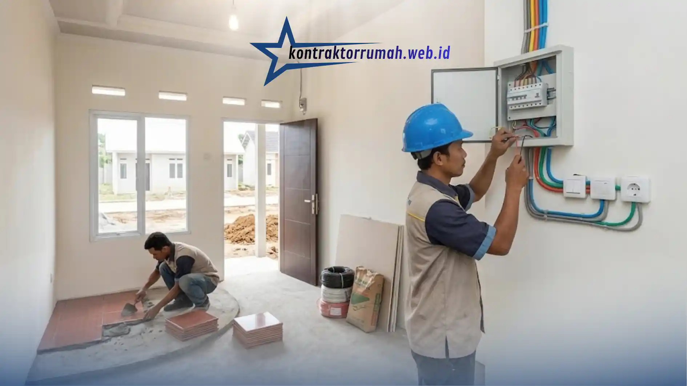

Memiliki rumah sendiri adalah impian banyak orang, dan program rumah subsidi hadir sebagai solusi yang membantu. Namun bagi Anda yang membeli kaveling subsidi dan ingin membangunnya sendiri, atau berencana renovasi total setelah serah terima, menghitung anggaran bisa membingungkan tanpa panduan yang jelas.
Berikut rincian komponen biaya yang wajib masuk dalam catatan anggaran Anda.
Poin Penting
- Pilih material berstandar SNI meski harganya terjangkau demi keamanan struktur jangka panjang.
- Sistem borongan lebih disarankan untuk pemula karena minim risiko pembengkakan biaya.
- Biaya instalasi listrik & air sering terlewat padahal memakan porsi anggaran yang tidak kecil.
- Sisihkan 10-15% dari total anggaran sebagai dana cadangan.
- Simulasi biaya bangun rumah tipe 36 berkisar Rp92.000.000-133.000.000.
Biaya Material Dasar
Kunci membangun rumah dengan budget terbatas ada pada pemilihan material yang tepat guna:
- Rangka atap baja ringan — sekitar Rp150.000-250.000/m², lebih murah dan cepat dipasang dibanding kayu.
- Dinding batako atau bata hebel — batako sekitar Rp1.500-2.500/buah, hebel sedikit lebih mahal namun lebih ringan dan tahan panas.
- Atap genteng metal atau asbes gelombang — genteng metal sekitar Rp35.000-60.000/lembar, pilihan populer untuk rumah subsidi karena ringan dan cepat pasang.

Pemilihan material struktur yang tepat guna jadi kunci membangun rumah subsidi dengan budget terbatas.
Gunakan bahan berstandar SNI meski harganya terjangkau — ini penting untuk keamanan struktur jangka panjang.
Upah Tenaga Kerja (Tukang)
Ada dua sistem umum:
- Sistem harian — upah tukang sekitar Rp100.000-150.000/hari, cocok jika Anda ingin kontrol detail lebih ketat, tapi durasi proyek bisa molor.
- Sistem borongan — total biaya sudah disepakati di awal (biasanya Rp900.000-1.500.000/m² untuk rumah tipe 36), lebih disarankan untuk pemula karena minim risiko pembengkakan biaya.
Biaya Instalasi Esensial
Bagian ini sering terlewat oleh pemula padahal memakan porsi anggaran yang tidak kecil:
- Instalasi listrik (kabel, stop kontak, sakelar, MCB) — sekitar Rp3.000.000-5.000.000 untuk rumah tipe 36.
- Saluran air dan sanitasi (pipa, septic tank, keran) — sekitar Rp4.000.000-7.000.000 tergantung jarak ke sumber air/PDAM.

Instalasi listrik dan sanitasi sering terlewat dari perhitungan awal, padahal porsinya cukup besar dalam anggaran.
Dana Cadangan (10-15%)
Dalam setiap proyek pembangunan selalu ada pengeluaran tak terduga — harga material naik tiba-tiba, cuaca buruk yang menunda pekerjaan, atau biaya kebersihan lingkungan pasca-konstruksi. Sisihkan 10-15% dari total anggaran sebagai buffer agar proyek tidak berhenti di tengah jalan.
Simulasi Kasar Biaya Bangun Rumah Tipe 36
Sebagai gambaran awal untuk menyusun anggaran, berikut simulasi kasar per komponen pekerjaan:
| Komponen | Estimasi Biaya |
|---|---|
| Material dasar (struktur, atap, dinding) | Rp45.000.000-55.000.000 |
| Upah tukang (borongan) | Rp32.000.000-54.000.000 |
| Instalasi listrik & air | Rp7.000.000-12.000.000 |
| Dana cadangan (10-15%) | Rp8.000.000-12.000.000 |
| Total perkiraan | ±Rp92.000.000-133.000.000 |
Catatan dari tim Kontraktor Rumah: Angka di atas adalah estimasi umum yang bisa berbeda tergantung lokasi proyek, harga material di daerah Anda, dan tingkat kesulitan lapangan. Konsultasikan kebutuhan Anda secara langsung agar mendapat RAB yang lebih akurat.
FAQ Seputar Biaya Bangun Rumah Subsidi
Membangun rumah subsidi dengan anggaran terbatas bukan berarti mengorbankan kualitas. Dengan memilih material yang tepat guna, menentukan sistem upah yang sesuai, dan menyiapkan dana cadangan sejak awal, proyek Anda punya peluang lebih besar untuk selesai tepat waktu dan sesuai bujet.